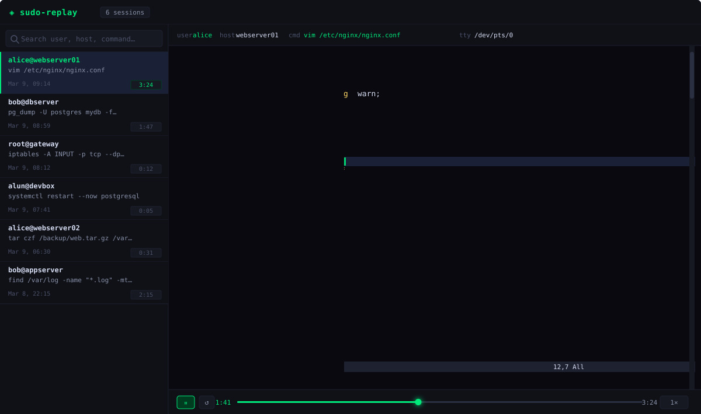

Every sudo command grants root.
Without verified remote logging, you have no tamper-proof record
of what actually happened — or if it happened at all.
Traditional syslog is advisory. The admin can stop the logger, the log server can be unreachable, or the service can simply be killed. None of these edge cases should allow privileged execution to go unrecorded.
sudo runs →
the command is blocked before execution.
No server, no sudo.
INCOMPLETE marker and logs a SECURITY: warning. The replay UI flags the session with a red border and warning badge.http://localhost:8080.
client cert — unknown shippers are rejected before any data is exchanged.host field in SESSION_START — a compromised shipper on host A cannot forge logs for host B.ed25519 private key — never distributed to clients.public key (ack-verify.key): can verify but cannot forge.cgroup.freeze=1 is enough.app-*.scope
— outside our cgroup. No controlling TTY →
shipper sends SIGSTOP directly (freeze, not kill).
On resume: SIGCONT.
unshare(CLONE_NEWCGROUP) — child processes see the session cgroup as their /sys/fs/cgroup root and cannot migrate to a parent cgroup to escape the freeze, even with CAP_SYS_ADMIN. Shipper polls every 10 ms to catch GUI apps that systemd moves out.1 to cgroup.freeze — kernel suspends all tasks. GUI apps outside the cgroup receive SIGSTOP. Banner shown on /dev/tty.Ctrl+C / Ctrl+Z still work — monitor thread reclaims terminal foreground group every 150 ms.cgroup.freeze=0, SIGCONT to any SIGSTOP'd processes. Session resumes with no data loss.A self-contained HTTP server reads the iolog directories written by sudo-logger-server and serves a full terminal player — no database, no dependencies.

| user | sessions | max risk | commands | last seen | top command |
|---|---|---|---|---|---|
| alun | 89 | CRIT 91 | 156 | 14:31:07 | cat /etc/shadow |
| bob | 45 | HIGH 72 | 62 | 13:55:11 | rm -rf /var/log/* |
| carl | 113 | MED 38 | 198 | 12:47:33 | systemctl restart nginx |
| dana | 32 | LOW 12 | 41 | 11:20:05 | journalctl -f |
| type | user / command | risk | time |
|---|---|---|---|
| HIGH RISK | alun / cat /etc/shadow | 91 | 14:31 |
| INCOMPLETE | bob / rm -rf /var/log/* | — | 13:55 |
| ROOT SHELL | alun / bash -i | 72 | 14:18 |
| AFTER HOURS | alun / vi /etc/crontab | 34 | 02:44 |
| LONG SESSION | carl / strace -p 1 | 41 | 11:03 |
| score | conditions | |
|---|---|---|
| 90 | command ∈ [cat, less, grep] AND args match /etc/shadow | edit |
| 75 | command ∈ [bash, sh, zsh, python3] AND runas = root | edit |
| 40 | hour < 6 OR hour ≥ 22 | edit |
| 35 | command = strace OR command = ptrace | edit |
| user | hosts | reason | since | |
|---|---|---|---|---|
| alice | all hosts | SEC-4521 — suspected compromise | 14:02 | edit |
| bob | db-01, db-02 | Policy violation | 09:17 | edit |
| carl | web-01 | Pending review | yesterday | edit |
eyJhbGciOi…)user:pass@host)api_key=…)mask_pattern in shipper.conf/var/log/sudoreplay)--storage=local (default)--storage=distributed --s3-bucket=... --db-url=...wayland-proxy sits between app and compositorwl_surface.commit — reads SHM pixel dataSTREAM_SCREEN chunksproxy_periodwayland = false in shipper.conf